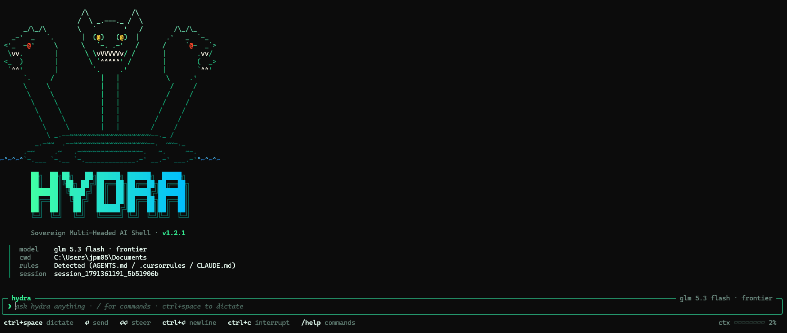

01 · hydra
sovereign multi-headed ai engine · interactive tui agent · model gateway routerSame engine, several working forms: a one-shot prompt, the interactive TUI agent, a swarm, the local gateway, and a background orchestrator daemon. A daemon is running now and using Hydra to work on Alice. That daily use is why Hydra leads this page.
six core functions for sovereign model summoning and terminal automation
multi-model routing
Dispatches queries across frontier models, free cloud endpoints, and offline local daemons using single clean aliases like hydra sonnet 5.5, hydra opus 5.5 high, or hydra sol 6.1 pro. An automated cascade queries OpenRouter first, falls back to Vercel AI Gateway, and descends to Cloudflare Workers AI, redacting credentials and paths from error records.
prompt execution
Executes single queries with real-time SSE token streaming, test-time compute controls like --effort high or --reasoning-mode pro, and structured --json output. Deep Unix pipe support enables cat file.py | hydra <alias> to treat stdin as the prompt, or pair stdin with instructions via cat log.txt | hydra sol 6.1 - "audit errors".
interactive tui terminal mode
Launches a persistent coding agent REPL via hydra agent or -i. The composer stays pinned beneath native terminal scrollback and shows the active model, working directory, detected rules, and session id. Ctrl+Space dictates. Enter sends. A second Enter steers a running turn. Ctrl+C interrupts. Slash opens commands, and a context gauge tracks the window.
continuous swarms
Orchestrates multi-agent specialist teams via hydra swarm. Runs Architect and Coder heads in parallel, triggers an ordered Auditor head post-generation to inspect code patches, and finishes with a Synthesizer head delivering a unified consensus roadmap. Swarms support autonomous tool execution through the --agentic flag.
background orchestrator daemon
Powers unattended long-horizon workflows and task intake via hydra orchestrator and idle compute worker scripts. Executes overnight repository audits, continuous research loops, automated test passes, and session context ledger persistence without human intervention. A daemon is running now and using Hydra to work on Alice.
openai api server on port 7777
Hosts a zero-dependency OpenAI-compatible gateway on 127.0.0.1:7777 via hydra serve. Provides standard /v1/models and /v1/chat/completions endpoints with transparent alias resolution, provider failover, streaming token chunks, and tool calling passthrough for external runners like Hermes and Pi.
ten interconnected model providers, inference engines, and cognitive runners
Frontier reasoning and surgical code crafting. Direct alias summoning with configurable reasoning effort tiers from low to max.
Flagship OpenAI reasoning with pro mode and high reasoning effort for formal invariant verification, security audits, and adversarial code reviews.
Powers hydra free at zero marginal cost using Meta Llama 3.3 70B Instruct fast running on global Cloudflare edge hardware.
Primary frontier router and secondary zero-cost fallback querying open-access Gemma 4 and Nemotron models when cloud quotas exhaust.
High-throughput, low-latency edge routing layer providing automated failover routing for production agent pipelines.
Direct serverless inference routing via hydra hf targeting open-weight model endpoints without dedicated infrastructure.
Discounted frontier inference access and specialized GLM-5.3 models delivering budget efficiency on high-volume batch jobs.
Offline execution through hydra local connecting to Ollama, llama.cpp, or EasyLM HTTP sockets with zero internet data transfer.
Evaluates input queries through native Alice proposition parsing and deterministic tool pipelines before remote model generation begins.
Built-in stdio JSON-RPC 2.0 client connecting Filesystem, Fetch, SQLite, Git, GitHub, Brave Search, Memory, and Playwright, paired with nine zero-dependency native coding tools.
five structural advantages of sovereign multi-headed routing
sovereign local data privacy
Zero third-party telemetry, tracking daemons, or background data collection. Prompts and tokens stay strictly on local hardware during offline inference. Child MCP processes run with stripped environments to prevent API token leakage.
compute tiering economics
Minimizes token spend by routing mechanical transforms, syntax linting, and directory navigation to free cloud tiers or local hardware. High-cost frontier tokens activate strictly when formal reasoning and architectural auditing demand them.
cross-model consensus verification
Eliminates single-model blind spots. Multi-agent swarms pit independent model families against each other, verifying code patches and system designs through adversarial auditing and automated synthesis.
zero vendor lock-in
Pure Python standard library and Node standard library implementations with zero external dependencies. Swapping upstream providers or switching models requires zero code refactoring.
offline fallback
Unbroken productivity during network outages or air-gapped field operations. When internet connectivity drops, commands route immediately to local model backends without crashing active workflows.
five practical workflows for autonomous engineering and research
autonomous coding swarms
Multi-headed parallel refactoring where Opus models system architecture, Sonnet writes production code and tests, GPT-6.1 Sol audits security vulnerabilities, and Gemini synthesizes the verified release.
continuous overnight research daemons
Background orchestrator loops that poll technical feeds, ingest academic papers, parse propositions through Snowgate Alice, and generate structured markdown digests while you sleep.
terminal workflow automation
Seamless command-line pipes where compiler errors, test failure traces, git diffs, and server logs stream directly into reasoning models for immediate root-cause diagnostics.
multi-model code review and refactoring
Pairing disparate model architectures to evaluate pull requests, ensuring that architectural invariants and boundary conditions face independent verification before merging.
deterministic knowledge graph ingestion
Extracting propositions from raw documentation through Alice cognitive grammar and recording structured entities directly into MCP Memory graphs or local SQLite stores.
terminal agent view pinned beneath native scrollback

Current idle composer. The mark, model, directory, detected rules, and session sit above the pinned prompt. Ctrl+Space dictates. Enter sends. A second Enter steers a running turn. Slash opens commands.
copy-ready terminal commands and programmatic sdk examples
# summon claude sonnet 5.5 with default streaming: $ hydra sonnet 5.5 "Implement a zero-copy ring buffer in Rust" # summon claude opus 5.5 with high reasoning effort: $ hydra opus 5.5 high "Verify distributed raft state machine invariants" # summon gpt-6.1 sol with pro reasoning mode: $ hydra sol 6.1 pro "Audit authentication token validation logic for side channels" # pipe source code directly into model with trailing instruction: $ cat src/parser.c | hydra sonnet 5.5 - "Identify potential memory leaks"
# launch interactive coding agent repl pinned beneath scrollback: $ hydra agent # launch with interactive in-flight tool confirmation: $ hydra agent --steer # run single autonomous agent task with native file and bash tools: $ hydra agent "Inspect pyproject.toml and add coverage scripts" # summon specific model with model context protocol tools enabled: $ hydra sonnet 5.5 --mcp "Search sqlite database for stale sessions"
# fan out across default architect, coder, auditor, and synthesizer heads: $ hydra swarm "Design and test an async event dispatcher" # delegate specialist heads to hermes and pi cli binaries: $ hydra swarm "Refactor parser" --heads architect:hermes,coder:pi,auditor # enable autonomous tool-augmented execution loops across swarm heads: $ hydra swarm "Fix security vulnerabilities" --agentic
# 1. launch sovereign openai gateway on port 7777: $ hydra serve --port 7777 # 2. point external agents like hermes, pi, goose, or aider to hydra: $ export OPENAI_BASE_URL="http://127.0.0.1:7777/v1" $ export OPENAI_API_KEY="sovereign-hydra" # 3. list registered models and aliases: $ curl http://127.0.0.1:7777/v1/models # 4. send chat completion with automatic alias resolution: $ curl http://127.0.0.1:7777/v1/chat/completions \ -H "Content-Type: application/json" \ -d '{"model":"sonnet 5.5","messages":[{"role":"user","content":"ping"}]}'
# zero-cost cloud inference via cloudflare / openrouter free forge: $ hydra free "Explain the Byzantine Generals problem" # completely offline local inference via ollama / llama.cpp: $ hydra local "Write a unit test for email validation" # hugging face serverless inference routing: $ hydra hf "Summarize git log output" # zero-cost agent loop with native file and bash tools: $ hydra agent --free "Lint repository python files" # offline local agent loop with no external network calls: $ hydra agent --local "Format markdown files"
# initialize default community mcp servers template in ~/.hydra: $ hydra mcp init # inspect registered mcp servers and exposed tools: $ hydra mcp list # test connection and tool discovery on filesystem server: $ hydra mcp test filesystem # test web fetch server: $ hydra mcp test fetch # summon model with live brave search mcp tool: $ hydra sonnet 5.5 --mcp "Search brave for latest rust release notes"
# python standard library programmatic invocation: from hydra_cli import complete, run_agent_loop, McpRegistry # direct synchronous prompt completion: response = complete("sonnet 5.5", "Explain memory barriers") print(response) # autonomous tool-augmented agent loop: registry = McpRegistry() result = run_agent_loop("opus 5.5 high", "Audit codebase", registry=registry) registry.shutdown() print(result)
install python and node packages with zero external dependencies
# python global or virtualenv install from git: $ pip install "git+https://github.com/erastudil/hydra.git" # or node global cli install: $ npm install -g "git+https://github.com/erastudil/hydra.git" # direct linux / macos bootstrap script: $ curl -fsSL https://raw.githubusercontent.com/erastudil/hydra/main/install.sh | bash # direct windows powershell bootstrap script: PS> irm https://raw.githubusercontent.com/erastudil/hydra/main/install.ps1 | iex
source: github.com/erastudil/hydra · packages: hydra-ai-cli · hydra-agent-cli